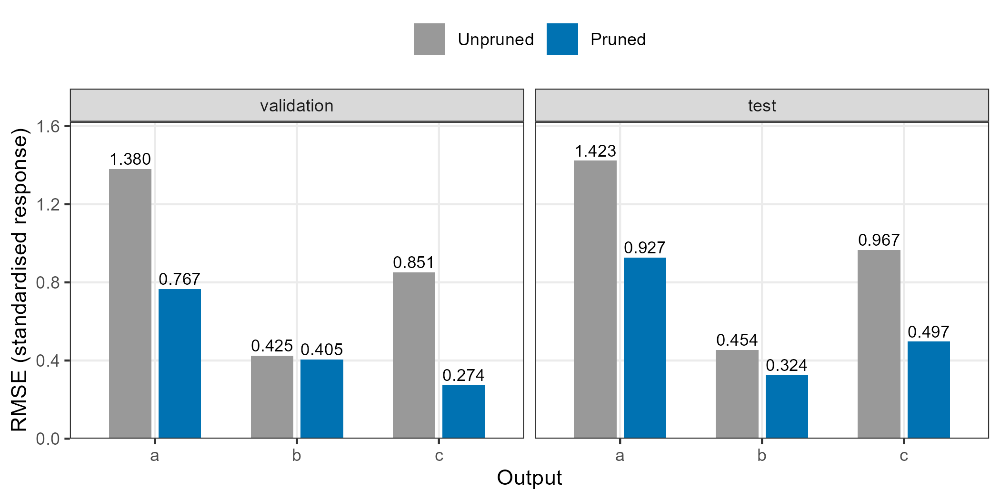

Pruning an operational-data network
Chaoqun Zhuang
Source:vignettes/prunlgp-operational.Rmd
prunlgp-operational.RmdThis companion to the main tutorial uses de-identified operational measurements and the same protected selection rule. The sample was used in earlier tutorial development; this is a worked example, not a new prospective study. The validation notes also compare the R master and dev implementations with the same data and fitting settings.
A linked emulator passes intermediate predictions and their
uncertainty to downstream models. Some of these inputs may add little
predictive value. prunlgp() evaluates reduced input sets,
refits the receiving models and selects a network using validation
predictions from the whole system.
The example uses the master-based R interface and Python backend recorded in the validation notes. The data and fitting settings are fixed before selection.
This example starts with six internal connections. Two intermediate
emulators, u and v, supply three downstream
emulators, a, b and c. Each
output has its own DGP and selects its own subset of the two internal
inputs.
Load the data
The accompanying file contains a small, de-identified sample of operational measurements: 96 training rows, 48 validation rows and 96 test rows from consecutive, non-overlapping periods. Variable names are neutral and timestamps and equipment identifiers have been removed. A one-sided filter was applied before sampling; the example therefore evaluates filtered responses. All columns were centred and scaled using the training rows only, then rounded to six decimal places.
x1–x16 are global inputs available under
the example’s prediction information set. These include origin
measurements and prescribed boundary inputs. They do not include future
observations of u, v, a,
b or c. The observed intermediate responses
are used to train components; validation and test predictions receive
only the global inputs.
library(dgpsi)
library(ggplot2)
dat <- read.csv(system.file("extdata", "prunlgp_example.csv", package="dgpsi"))
train <- subset(dat, split == "train")
validation <- subset(dat, split == "validation")
test <- subset(dat, split == "test")
global <- paste0("x", 1:16)
table(dat$split)
#>
#> test train validation
#> 96 96 48For a new dataset, estimate transformation parameters on the training partition and apply those same parameters to validation and test data. Standardisation is a numerical transformation, not a guarantee of anonymity.
Train the component emulators
Each downstream component initially receives both internal inputs. We use the same DGP architecture and fitting budget before and after pruning: two layers, two latent nodes, 40 iterations, ten ESS burn-in steps per iteration and twenty imputations. The burn-in count is explicit because development versions may use different defaults.
features <- list(
u = c("x1", "x2", "x5", "x6", "x7", "x8", "x9", "x10"),
v = c("x5", "x6", "x7", "x8", "x11", "x12"),
a = c("x5", "x6", "x7", "x8", "x13", "x14", "x15", "x16", "u", "v"),
b = c("x5", "x6", "x7", "x8", "x13", "x14", "x15", "x16", "u", "v"),
c = c("x5", "x6", "x7", "x8", "x13", "x14", "x15", "x16", "u", "v")
)
# Use the same group seed for the original fit and its reduced-input fits.
component_seed <- function(id) as.integer((57 + 104729 *
match(id, sort(names(features)))) %% 2147483646 + 1)
components <- lapply(names(features), function(id) {
set_seed(component_seed(id))
dgp(as.matrix(train[, features[[id]]]), as.matrix(train[, id, drop=FALSE]),
id=id, name="sexp", depth=2, node=2, N=40, B=20, ess_burn=10,
share=FALSE, bounds=c(0.1, 10), prior="ga", nugget_est=TRUE, verb=FALSE)
})Construct the initial network
To_Input identifies the receiving component’s training
column. An internal connection takes output 1 of u or
v; a global connection takes the corresponding column of
the supplied global input matrix.
connections <- do.call(rbind, lapply(names(features), function(id) {
f <- features[[id]]
internal <- f %in% c("u", "v")
data.frame(
From_Emulator=ifelse(internal, f, "Global"),
To_Emulator=id,
From_Output=ifelse(internal, 1L, match(f, global)),
To_Input=seq_along(f)
)
}))
network <- lgp(connections, components, B=20, verb=FALSE)Select internal connections
The refit function states exactly how a reduced
component is trained. Its keep argument refers to columns
of the original training matrix; it never refers to an
already reduced matrix. The component’s response and ID are
retained.
refit <- function(model, keep, seed) {
dgpsi::set_seed(seed)
dgpsi::dgp(model$data$X[, keep, drop=FALSE], model$data$Y,
id=model$id, name="sexp", depth=2, node=2, N=40, B=20, ess_burn=10,
share=FALSE, bounds=c(0.1, 10), prior="ga", nugget_est=TRUE, verb=FALSE)
}Here the system objective is the equally weighted mean normalised
RMSE of a, b and c. The
normalising scales are computed from their component training responses.
u and v still participate in linked
prediction, but are not scored in this particular objective.
protect=0 also requires that each scored
validation RMSE is no larger than its initial value. This prevents an
improvement in one output from masking a deterioration in another.
The function gives each component a stable imputation stream. An unrelated deletion therefore cannot change its predictions just by moving nodes between layers. Retained connections still propagate upstream predictive means and variances through the native linked predictor.
selected <- prunlgp(
network, components,
x=as.matrix(validation[, global]),
y=lapply(validation[, c("a", "b", "c")], as.numeric),
refit=refit, seed=57, B=20, protect=0, search="subsets",
max_rounds=2, max_evals=32, verb=FALSE
)
selected
#> Pruned linked emulator
#> Validation loss: 0.885412 -> 0.481936
#> Internal links: 6 -> 1
#> Evaluations: 16 (no_improvement)At each visit, the function evaluates all internal-input subsets for the receiving output while holding other fitted components fixed. It then compares the system validation losses. The initial network and the network without internal inputs are also candidates. The best admissible evaluated network is returned. This extends output-specific subset selection with a system-level objective; it does not claim to solve the global combinatorial optimisation problem.
knitr::kable(selected$history[, c("evaluation", "stage", "loss", "internal_links",
"admissible", "selected")], digits=4)| evaluation | stage | loss | internal_links | admissible | selected |
|---|---|---|---|---|---|
| 1 | initial | 0.8854 | 6 | TRUE | FALSE |
| 2 | empty | 0.5170 | 0 | TRUE | FALSE |
| 3 | round1:a | 0.7158 | 4 | TRUE | FALSE |
| 4 | round1:a | 0.9094 | 5 | FALSE | FALSE |
| 5 | round1:a | 0.6808 | 5 | TRUE | FALSE |
| 6 | round1:b | 0.6743 | 3 | TRUE | FALSE |
| 7 | round1:b | 0.6810 | 4 | FALSE | FALSE |
| 8 | round1:b | 0.6863 | 4 | FALSE | FALSE |
| 9 | round1:c | 0.4819 | 1 | TRUE | TRUE |
| 10 | round1:c | 0.4865 | 2 | TRUE | FALSE |
| 11 | round1:c | 0.6550 | 2 | TRUE | FALSE |
| 12 | round2:a | 0.7105 | 1 | FALSE | FALSE |
| 13 | round2:a | 0.6866 | 2 | TRUE | FALSE |
| 14 | round2:b | 0.4886 | 2 | FALSE | FALSE |
| 15 | round2:b | 0.4940 | 2 | FALSE | FALSE |
| 16 | round2:b | 0.4885 | 3 | TRUE | FALSE |
Inspect the networks
Both objects below are ordinary linked emulators. The initial model is activated with the same settings used during selection, providing a consistent reference for the subsequent comparison. Blue arrows show retained internal connections; orange dashed arrows show deleted connections in the initial graph. Grey arrows represent global inputs. Node positions are identical in both views.
network_view <- function(model, title) {
view <- summary(model)
view$height <- "440px"
view$x$height <- "360px"
view$x$main$text <- title
view$x$submain$text <- ""
view$x$footer$text <- ""
view$x$nodes$label <- ifelse(view$x$nodes$id == "Global", "Global",
paste0(view$x$nodes$id, "\nDGP"))
view$x$nodes$shape <- ifelse(view$x$nodes$id == "Global", "database", "box")
view$x$nodes$color <- ifelse(view$x$nodes$id=="Global", "#67B7F7",
ifelse(view$x$nodes$id %in% c("u", "v"), "#F2767A", "#6DB66E"))
position <- data.frame(id=c("Global", "u", "v", "a", "b", "c"),
x=c(0, 220, 220, 440, 440, 440),
y=c(0, -100, 100, -140, 0, 140))
index <- match(view$x$nodes$id, position$id)
view$x$nodes$x <- position$x[index]
view$x$nodes$y <- position$y[index]
edge_key <- paste(view$x$edges$from, view$x$edges$to)
kept_key <- paste(selected$structure$From_Emulator, selected$structure$To_Emulator)
internal <- view$x$edges$from != "Global"
removed <- internal & !edge_key %in% kept_key
view$x$edges$color <- ifelse(!internal, "#BBBBBB",
ifelse(removed, "#D55E00", "#0072B2"))
view$x$edges$dashes <- removed
view$x$edges$width <- ifelse(internal, 2, 1)
view <- visNetwork::visHierarchicalLayout(view, enabled=FALSE)
view <- visNetwork::visPhysics(view, enabled=FALSE)
view <- visNetwork::visNodes(view, font=list(color="black", size=16))
htmlwidgets::onRender(view, "function(el, x) {
document.getElementById('maindiv' + el.id).style.height = 'calc(100% - 80px)';
}")
}
network_view(selected$initial_model, "Before pruning: six internal connections")
n_links <- sum(selected$structure$From_Emulator != "Global")
network_view(selected, sprintf("After pruning: %d internal %s", n_links,
if(n_links == 1) "connection" else "connections"))
original_edges <- subset(selected$initial_structure, From_Emulator != "Global")
retained_edges <- subset(selected$structure, From_Emulator != "Global")
connection_summary <- do.call(rbind, lapply(c("a", "b", "c"), function(id) {
original <- original_edges$From_Emulator[original_edges$To_Emulator == id]
retained <- retained_edges$From_Emulator[retained_edges$To_Emulator == id]
removed <- setdiff(original, retained)
data.frame(output=id, initial=length(original), retained=length(retained),
removed=length(removed),
retained_inputs=if(length(retained)) paste(retained, collapse=", ") else "None",
removed_inputs=if(length(removed)) paste(removed, collapse=", ") else "None")
}))
knitr::kable(connection_summary, row.names=FALSE)| output | initial | retained | removed | retained_inputs | removed_inputs |
|---|---|---|---|---|---|
| a | 2 | 1 | 1 | v | u |
| b | 2 | 0 | 2 | None | u, v |
| c | 2 | 0 | 2 | None | u, v |
Pruning removes an input column and its connection. It does not remove the output model or automatically disconnect other receivers. A model with no internal inputs continues to use its global inputs and may still supply downstream models.
Evaluate held-out predictions
Test responses are evaluated after structure selection. Neither the structure search nor the component fitting uses them. The sample is an illustrative benchmark, rather than a new prospective evaluation.
set_seed(57)
before <- predict(selected$initial_model, as.matrix(test[, global]),
full_layer=TRUE)$results
set_seed(57)
after <- predict(selected, as.matrix(test[, global]), full_layer=TRUE)$results
means <- function(p) do.call(c, unname(p$mean))
scores <- do.call(rbind, lapply(c("a", "b", "c"), function(id) {
data.frame(output=id,
validation_unpruned=selected$initial_rmse[id],
validation_pruned=selected$rmse[id],
test_unpruned=sqrt(mean((as.numeric(means(before)[[id]])-test[[id]])^2)),
test_pruned=sqrt(mean((as.numeric(means(after)[[id]])-test[[id]])^2)))
}))
scores$validation_reduction_pct <- 100*(1-scores$validation_pruned/scores$validation_unpruned)
scores$test_reduction_pct <- 100*(1-scores$test_pruned/scores$test_unpruned)
score_table <- do.call(rbind, lapply(c("validation", "test"), function(part) {
data.frame(Partition=part, Output=scores$output,
Unpruned=scores[[paste0(part, "_unpruned")]],
Pruned=scores[[paste0(part, "_pruned")]],
Reduction=scores[[paste0(part, "_reduction_pct")]])
}))
knitr::kable(score_table, digits=c(0, 0, 4, 4, 2), row.names=FALSE,
col.names=c("Partition", "Output", "Unpruned", "Pruned", "Reduction (%)"))| Partition | Output | Unpruned | Pruned | Reduction (%) |
|---|---|---|---|---|
| validation | a | 1.3804 | 0.7665 | 44.47 |
| validation | b | 0.4248 | 0.4052 | 4.62 |
| validation | c | 0.8511 | 0.2741 | 67.79 |
| test | a | 1.4229 | 0.9266 | 34.88 |
| test | b | 0.4542 | 0.3244 | 28.59 |
| test | c | 0.9665 | 0.4971 | 48.57 |
system_test <- c(Unpruned=mean(scores$test_unpruned / selected$settings$scale),
Pruned=mean(scores$test_pruned / selected$settings$scale))
knitr::kable(data.frame(model=names(system_test), mean_NRMSE=system_test),
digits=4, row.names=FALSE)| model | mean_NRMSE |
|---|---|
| Unpruned | 0.9479 |
| Pruned | 0.5827 |
plot_data <- do.call(rbind, lapply(c("validation", "test"), function(part) {
rbind(data.frame(output=scores$output, partition=part, model="Unpruned",
RMSE=scores[[paste0(part, "_unpruned")]]),
data.frame(output=scores$output, partition=part, model="Pruned",
RMSE=scores[[paste0(part, "_pruned")]]))
}))
plot_data$partition <- factor(plot_data$partition, levels=c("validation", "test"))
plot_data$model <- factor(plot_data$model, levels=c("Unpruned", "Pruned"))
ggplot(plot_data, aes(output, RMSE, fill=model)) +
geom_col(position=position_dodge(0.7), width=0.6) +
geom_text(aes(label=sprintf("%.3f", RMSE)), position=position_dodge(0.7),
vjust=-0.35, size=3) +
scale_y_continuous(expand=expansion(mult=c(0, .14))) +
facet_wrap(~partition) +
scale_fill_manual(values=c(Unpruned="#999999", Pruned="#0072B2")) +
labs(x="Output", y="RMSE (standardised response)", fill=NULL) +
theme_bw(base_size=11) + theme(legend.position="top", panel.grid.minor=element_blank())
Validation and test errors of the three scored outputs. Lower values are better.
The selected network reduces the validation objective by 45.6% while retaining 1 of the six internal links. Its mean test NRMSE is 0.5827, compared with 0.9479 before pruning.
The validation objective determines the selected graph. A smaller
validation loss does not imply that every output, or the held-out test
period, will improve. The tables report both partitions so that this
distinction remains visible. The protect=0 setting used
here enforces the per-output condition on validation errors. It is not a
constraint on future test errors.
The connection table and error plot answer different questions: which inputs were removed, and how the resulting predictions changed. Different receivers can retain different subsets of the same upstream outputs. An unchanged subset can also yield unchanged predictions when its ancestors and fitted model remain unchanged. This is why identical predictions can be a correct result for an unaffected path.
Check predictive intervals
Pruning leaves native uncertainty propagation in place. The following table reports 95% moment-matched interval coverage, width and interval score on the same test rows. Coverage should be assessed against 95%; width and interval score are better when smaller at adequate coverage. These diagnostics are reported after selection and do not enter the RMSE objective.
interval_summary <- function(p, label) {
mu <- means(p); variance <- do.call(c, unname(p$var))
do.call(rbind, lapply(c("a", "b", "c"), function(id) {
lo <- as.numeric(mu[[id]]) - qnorm(.975)*sqrt(as.numeric(variance[[id]]))
hi <- as.numeric(mu[[id]]) + qnorm(.975)*sqrt(as.numeric(variance[[id]]))
truth <- test[[id]]; s <- selected$settings$scale[id]
data.frame(model=label, output=id, coverage=mean(truth>=lo & truth<=hi),
normalised_width=mean(hi-lo)/s,
normalised_IS95=mean(hi-lo+40*pmax(lo-truth,0)+40*pmax(truth-hi,0))/s)
}))
}
knitr::kable(rbind(interval_summary(before,"Unpruned"),
interval_summary(after,"Pruned")), digits=3, row.names=FALSE)| model | output | coverage | normalised_width | normalised_IS95 |
|---|---|---|---|---|
| Unpruned | a | 0.604 | 2.621 | 14.659 |
| Unpruned | b | 0.812 | 0.935 | 3.180 |
| Unpruned | c | 0.427 | 0.927 | 15.599 |
| Pruned | a | 0.885 | 2.954 | 4.721 |
| Pruned | b | 0.812 | 0.586 | 2.235 |
| Pruned | c | 0.729 | 0.930 | 4.888 |
Change the selection rule
Give a more important output a larger weight, or require every scored output to stay within 1% of its initial validation RMSE. These are modelling choices to make before examining test results.
protected <- prunlgp(network, components,
as.matrix(validation[, global]), lapply(validation[, c("a", "b", "c")], as.numeric),
refit, weights=c(a=1, b=1, c=2), protect=0.01, seed=57)
# For more candidate inputs, backward deletion reduces the search cost.
backward <- prunlgp(network, components,
as.matrix(validation[, global]), lapply(validation[, c("a", "b", "c")], as.numeric),
refit, search="backward", max_evals=100, seed=57)Independent candidates can run on separate PSOCK workers. Keep the
worker count times the thread count within the available CPU budget. If
a non-default Python environment is used, supply the corresponding
initialiser through worker_init.
parallel_result <- prunlgp(network, components,
as.matrix(validation[, global]), lapply(validation[, c("a", "b", "c")], as.numeric),
refit, seed=57, workers=2, threads=1,
worker_init=function() dgpsi::init_py(verb=FALSE))For a time-expanded network, use groups to tie copies of
the same fitted scalar component. A removed dimension then disappears
from every copy, including an origin copy supplied by a measurement.
Copies must have identical training data and consistent original input
positions. The caller is responsible for supplying only global inputs
available at the forecast origin or prescribed as known boundaries; the
function cannot infer measurement availability from numeric
matrices.
The returned $model supports the usual linked prediction
and plotting methods. Use
dgpsi::serialize(selected$model, light=FALSE) to save its
Python-backed state, and save $history and
$settings alongside it for an audit of selection.
To execute all computations when rebuilding this article, set
DGPSI_RUN_PRUNLGP_VIGNETTE=true before calling
rmarkdown::render(). An optional
DGPSI_TUTORIAL_BACKEND value is forwarded to
init_py(dgpsi_ver=...). The default package build shows the
code without starting or installing Python.